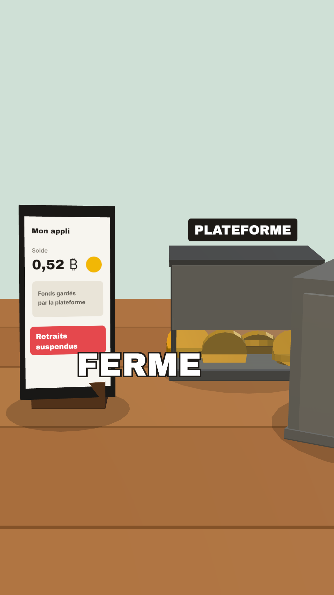
« Si tes cryptos sont sur une appli d'échange, tu as un compte, pas un portefeuille. Si la plateforme ferme, tes coins restent chez elle. »
Téléphone + vitrine « PLATEFORME ». Le rideau baisse et un cadenas rouge apparaît sur « ferme ».
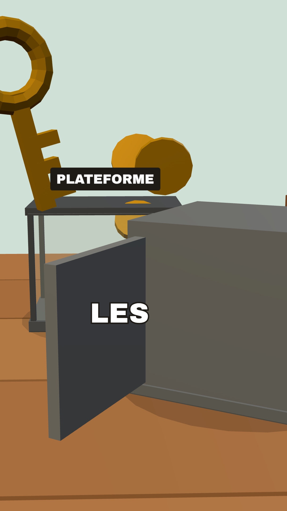
« Alors, tu génères ta propre clé privée. Celui qui a la clé a les fonds. Ça s'appelle l'auto-garde. »
La clé or sort du téléphone ; les pièces sautent de la vitrine dans ton coffre.
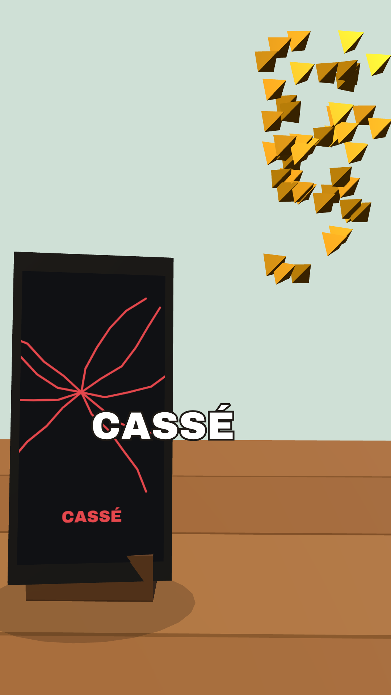
« Mais une clé, ça se perd : téléphone cassé, tout est perdu. »
Fissure rouge sur « cassé », la clé éclate en morceaux.
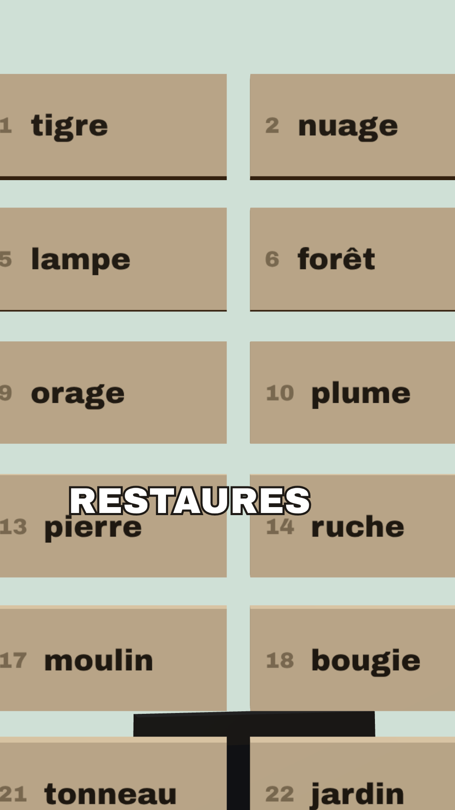
« Alors, la clé est traduite en vingt-quatre mots. Avec eux, tu restaures tout, sur n'importe quel appareil. Ça s'appelle la phrase de récupération. »
24 tuiles numérotées se posent en grille, gros plan, puis reforment la clé.
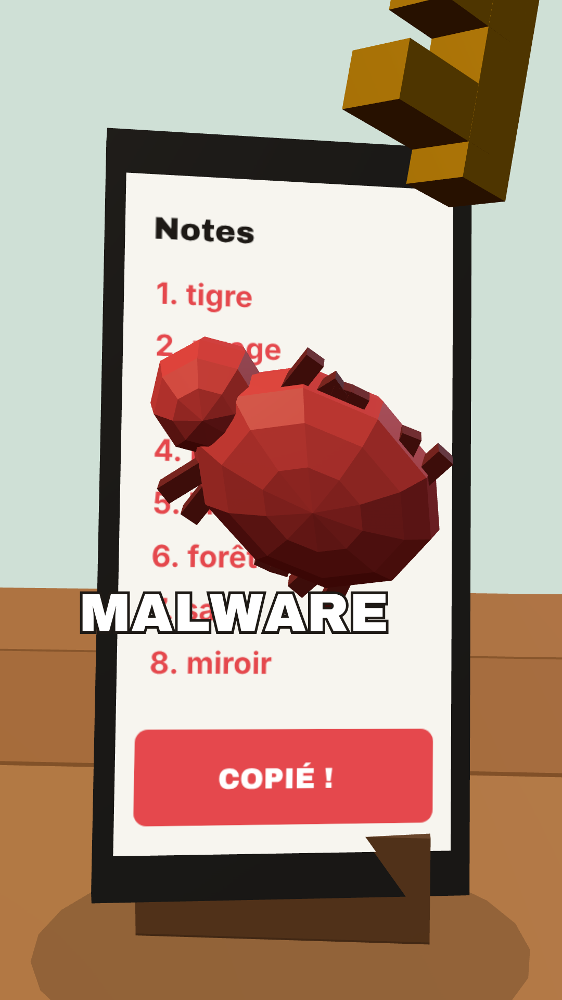
« Mais en photo ou dans tes notes, un malware la lit en une seconde. »
Les mots dans l'appli Notes ; un insecte rouge grimpe et les copie.
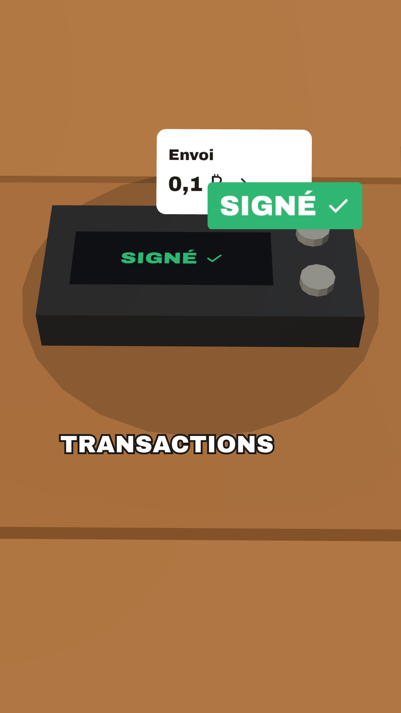
« Alors, la clé vit dans un petit boîtier jamais connecté à Internet. Il signe les transactions à l'intérieur. Ça s'appelle un portefeuille matériel. »
Le boîtier hors ligne avale la clé ; une transaction entre et ressort tamponnée SIGNÉ.
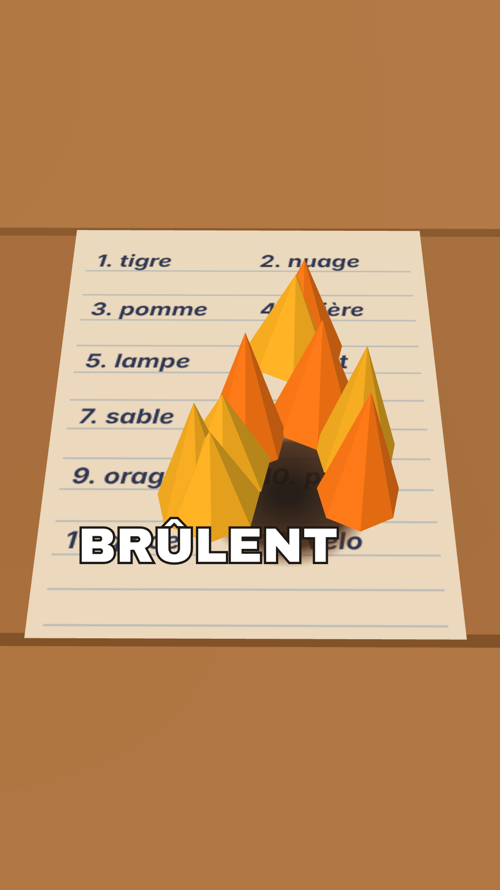
« Mais les mots sur papier brûlent, se mouillent, se volent. »
La feuille de mots prend feu, puis l'eau tombe dessus.
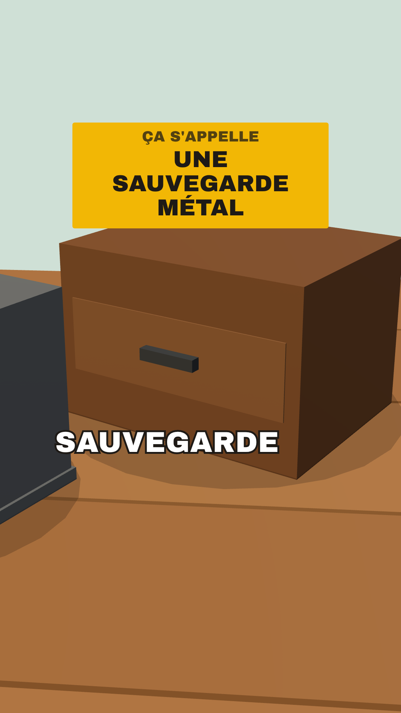
« Alors, on les grave sur une plaque en acier, rangée loin du boîtier. Ça s'appelle une sauvegarde métal. »
Plaque acier gravée, rangée dans le tiroir loin du boîtier.
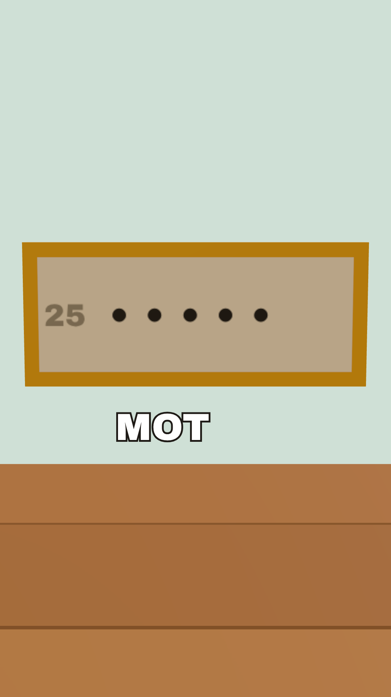
« Et pour que la plaque seule ne suffise pas : un vingt-cinquième mot, gardé à part. Ça s'appelle une passphrase. »
Une 25e tuile cerclée d'or, masquée, qui s'envole hors champ.
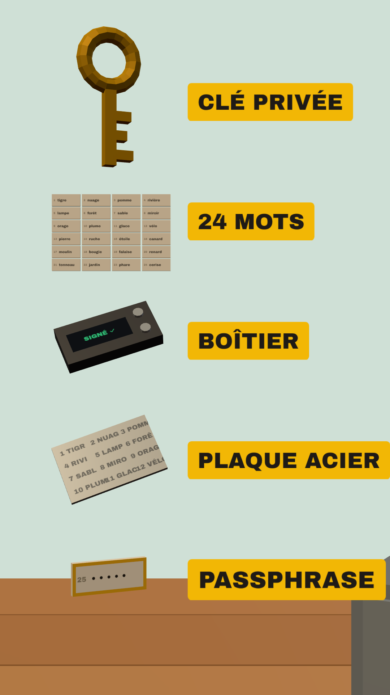
« Clé privée, vingt-quatre mots, boîtier, plaque en acier, passphrase. »
Les 5 pièces en colonne, chacune étiquetée sur son mot.
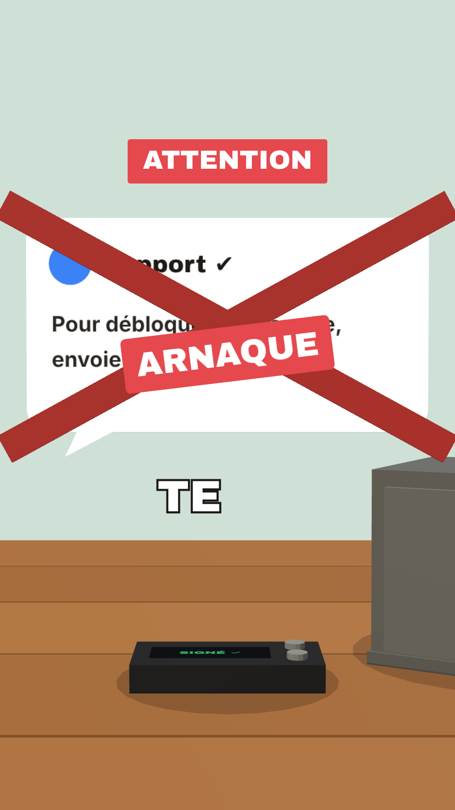
« Attention : aucun support, aucun site n'a jamais besoin de tes vingt-quatre mots. Qui les demande te vole. »
Message « Support » qui demande les 24 mots, barré et tamponné ARNAQUE sur « demande ».
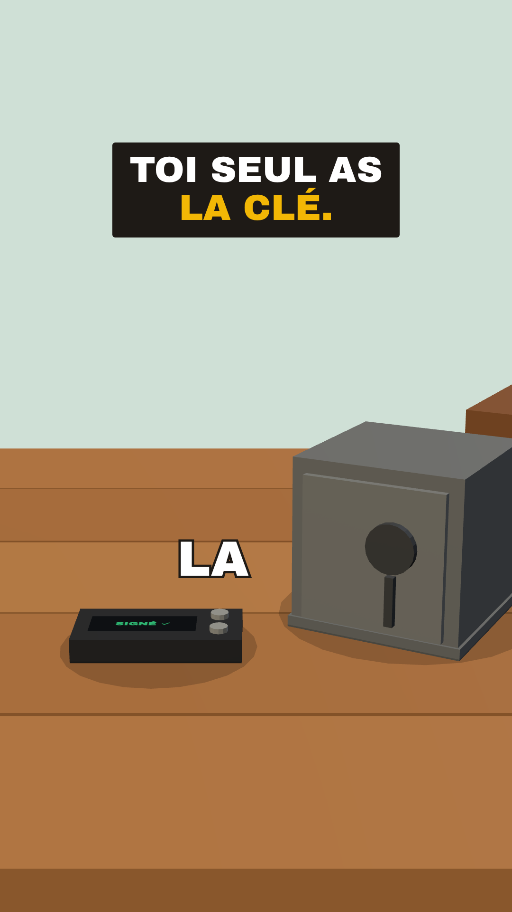
« Bravo. Ce n'est plus une appli sur ton téléphone. C'est un coffre dont toi seul as la clé. »
Recul : coffre fermé, boîtier ; titre final « TOI SEUL AS LA CLÉ. »